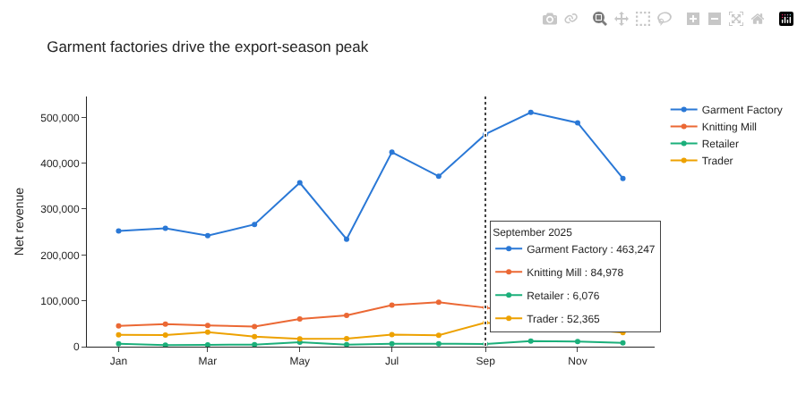
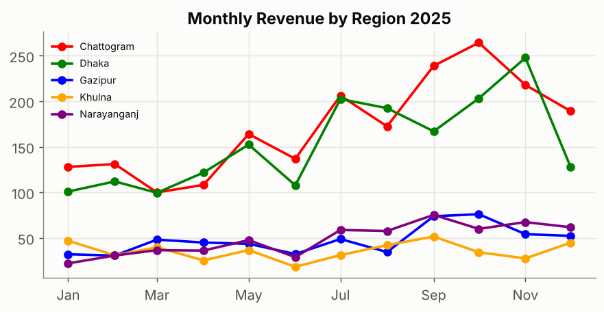
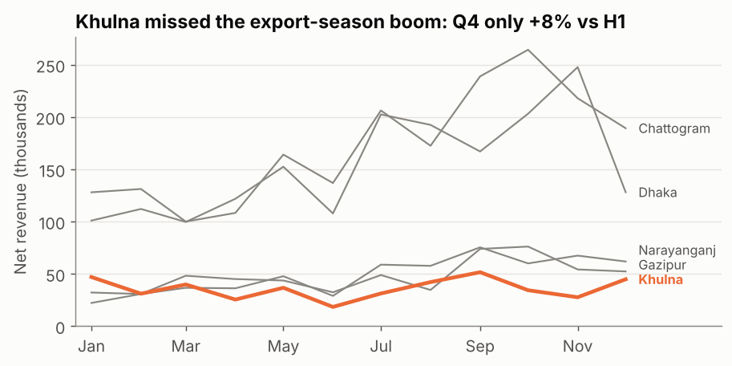

Plotly & Analytical Storytelling: From Exploring to Explaining
Make interactive Plotly charts for exploration and sharing, then redesign a cluttered chart into one clear message with highlighting, direct labels and an action title — and build a short data story.
Before you start
- data-science-scripts.zipAll 21 Phase 2 lesson scripts (NumPy to research thinking), shared chart style, data folder and solutions · 230 KB
- orders_2025.csv4,246 clean orders for 2025 (synthetic, fixed seed): region, segment, channel, product, price, discount, status, delivery days, revenue · 472 KB
What is it?
| Exploratory charts | Explanatory charts | |
|---|---|---|
| Purpose | Help you find things | Help others understand one thing |
| Audience | You, analysts | Managers, clients, readers |
| Style | Many series, interactive, hover and zoom | One message, highlighted, labelled, static is fine |
| Tool here | Plotly | matplotlib, with storytelling design |
Analytical storytelling is turning findings into a short, logical sequence: context → finding → evidence → so what → recommendation, with each chart supporting one step.
Why it matters at work
Interactive charts let stakeholders explore without asking you for every cut. But decisions are made from a few clear charts and sentences. Analysts who can redesign a cluttered chart into one obvious message are the ones invited to present to leadership.
The script is 16_viz_plotly_storytelling.py.
Part 1: Plotly Express — interactive in one call
import plotly.express as px
monthly = net.groupby(["month", "segment"], as_index=False)["revenue"].sum()
fig = px.line(monthly, x="month", y="revenue", color="segment", markers=True,
color_discrete_sequence=PALETTE,
labels={"month": "", "revenue": "Net revenue", "segment": "Segment"},
title="Garment factories drive the export-season peak")
fig.update_layout(template="simple_white", hovermode="x unified", legend_title_text="")
fig.update_yaxes(rangemode="tozero", tickformat=",.0f")
fig.update_xaxes(hoverformat="%B %Y", dtick="M2", tickformat="%b")
fig.update_traces(hovertemplate="%{y:,.0f}") # clean hover text: just the value
fig.write_html(CHARTS / "viz_plotly_monthly.html", include_plotlyjs="cdn")
(Screenshot of the HTML file with the mouse over September.)
- One call with tidy data:
x,yandcolorare column names, like seaborn. - Interactive for free: hover for values, drag to zoom, double-click to reset, click a legend item to hide that series, camera icon to download a PNG.
hovermode="x unified"shows all segments for one month in one box;hovertemplatecontrols the text.write_htmlcreates a file anyone can open in a browser.include_plotlyjs="cdn"keeps it small (about 12 KB) but needs internet. Useinclude_plotlyjs=Truefor a fully offline file (about 4.8 MB).- In a notebook (Jupyter, VS Code),
fig.show()displays it inline.
Exploring with hover
cust = net.groupby(["customer_id", "segment", "region"], as_index=False).agg(
orders=("order_id", "size"), revenue=("revenue", "sum"))
fig2 = px.scatter(cust, x="orders", y="revenue", color="segment", size="revenue", hover_name="customer_id",
hover_data={"region": True, "revenue": ":,.0f"}, log_y=True, color_discrete_sequence=PALETTE,
title="Customers: number of orders vs total revenue (hover for details)")customer_id segment region orders revenue
C010 Garment Factory Dhaka 201 295414.0
C044 Garment Factory Dhaka 161 255781.0
C037 Garment Factory Khulna 152 225647.0Sixty customers as dots: hover to see who each one is. Perfect for exploring, or for sharing with a sales manager who wants to look up “their” customers. Not the chart you’d put on a slide.
Part 2: storytelling — redesign a chart
The finding (from the data): every region grows strongly in the export season except one.
growth = (q4 / 3) / (h1 / 6) - 1 # monthly average Q4 vs first half
print((growth * 100).round(0).sort_values(ascending=False))region
Narayanganj 87.0
Chattogram 75.0
Dhaka 67.0
Gazipur 57.0
Khulna 8.0
dtype: float64Before

All the data is there, but the reader has to match five colours to a legend and still doesn’t know what to look at. The title describes; it doesn’t say anything.
After
focus = growth.idxmin() # Khulna
for col in reg.columns:
is_focus = col == focus
ax.plot(reg.index, reg[col], color=PALETTE[1] if is_focus else MUTED,
linewidth=2.6 if is_focus else 1.2, zorder=3 if is_focus else 2)
ax.text(reg.index[-1] + pd.Timedelta(days=8), label_y[col], col, va="center", fontsize=9,
color=PALETTE[1] if is_focus else INK_2, fontweight="bold" if is_focus else "normal")
ax.set_title(f"{focus} missed the export-season boom: Q4 only {growth[focus]:+.0%} vs H1")
| Change | Why it works |
|---|---|
| Action title with the number | The message is read first, in one line |
| One highlight colour, others grey | The eye goes straight to Khulna; context stays visible |
| Direct labels instead of a legend | No back-and-forth matching (labels nudged apart so they don’t overlap) |
| Markers and vertical gridlines removed | Less ink that carries no information |
| Y-axis from zero, units in the label | Honest scale, readable values |
Part 3: a five-sentence data story
Context: 2025 revenue followed the export season, with every region growing from July. Finding: Khulna is the exception: its Q4 monthly revenue was only 8% above the first half, against 57–87% elsewhere. Evidence: (the “after” chart). Khulna also has the slowest and least predictable deliveries (median 5 days, up to 17) and 26% late deliveries. So what: If Khulna had grown like Gazipur (+57%), Q4 revenue would have been roughly 50 thousand higher. Recommendation: Investigate delivery capacity to Khulna before next season, and test a faster-delivery offer with a few Khulna customers.
Each sentence has one job, and each number is checkable. (Is “50 thousand” right? Khulna’s H1 monthly average × 3 months × the growth gap. Recompute it as an exercise. Always check your story’s numbers.)
Common mistakes
| Mistake | What happens | Fix |
|---|---|---|
| Showing exploratory charts in a presentation | The audience explores instead of listening | One message per chart, highlighted |
| Rainbow colours with a legend | Slow, error-prone reading | Grey + one highlight, direct labels |
| Interactive HTML relying on the CDN, sent to someone offline | A blank page | include_plotlyjs=True for offline files |
| Story without a “so what” | “Interesting”, then nothing happens | End with a recommendation and owner |
| Cherry-picking the one chart that supports you | Lost trust when someone checks | Show the context, state caveats |
Try it yourself
Task: Make an interactive horizontal bar chart of 2025 revenue by product, coloured by category and sorted by revenue. Which three products earn the most?
Show the solution
prod = net.groupby(["product", "category"], as_index=False)["revenue"].sum().sort_values("revenue")
fig3 = px.bar(prod, x="revenue", y="product", color="category", orientation="h", color_discrete_sequence=PALETTE,
title="Revenue by product, 2025")
fig3.update_layout(template="simple_white", yaxis={"categoryorder": "total ascending"})
fig3.write_html(CHARTS / "viz_plotly_products.html", include_plotlyjs="cdn")
print(prod.tail(3).round(0).to_string(index=False)) product category revenue
Jersey Knit Fabric 597764.0
Cotton Yarn 30s Yarn 614595.0
Denim 12oz Fabric 680805.0categoryorder: "total ascending" keeps the bars sorted even
with colours by category.
Quick quiz
1. When is an interactive Plotly chart the better choice?
- For a slide with one key message
- For exploring data, or letting stakeholders look up details themselves
- Always
Show answer
B.2. What’s the most effective way to focus attention on one series among five?
- Give every series a bright colour
- Grey for context, one highlight colour, direct labels
- Add more gridlines
Show answer
B.3. Which part completes a data story after context, finding and evidence?
- More charts
- So what, and a recommendation
- The raw data
Show answer
B.Summary
- Plotly Express: interactive charts in one call;
write_htmlto share ("cdn"small,Trueoffline). - Separate exploratory charts (for you) from explanatory charts (for others).
- Redesign for one message: action title, one highlight, grey context, direct labels, less ink.
- Tell the story in five steps: context → finding → evidence → so what → recommendation, with checkable numbers.
Job-ready check
Interview question: “Show me how you’d present this analysis to a busy executive.”
Strong answer: “One headline sentence with the finding and the number, one chart designed around that message (action title, the key series highlighted, everything else grey), then the so-what and a concrete recommendation with an owner. The detailed or interactive charts go in an appendix or a link for anyone who wants to explore.”
Mini project: Pick one finding from your EDA note. Make a “before” chart with default settings and an “after” chart using the storytelling checklist, and write the five-sentence story underneath.
AI Mentor Prompt
Paste this into ChatGPT, Claude, Gemini, or another capable assistant to turn this tutorial into an interactive mentoring session.
You are my hands-on Python, statistics and data-science mentor.
I am currently studying:
"Plotly & Analytical Storytelling: From Exploring to Explaining"
My level:
Intermediate
Teach me this topic interactively rather than giving me a long lecture.
Use this sequence:
1. Check what I already understand with one short diagnostic question.
2. Explain the concept in simple language and give me the mental model first.
3. Give me one small task using code, SQL, configuration, data, or architecture as appropriate.
4. Wait for my attempt before showing a complete solution.
5. Review my work and explain both what is correct and what needs improvement.
6. Help me debug errors step by step instead of immediately replacing my work.
7. Increase the difficulty gradually and connect each new step to the previous one.
8. Relate what I am learning to real professional data/AI engineering work.
9. Ask me to explain an important decision in my own words so you can check my understanding.
10. At the end, ask me to build or modify one small feature independently.
Important rules:
- Do not do the entire exercise for me unless I explicitly ask.
- Explain unfamiliar terminology before using it heavily.
- Prefer current, production-relevant practices over outdated shortcuts.
- Distinguish clearly between concepts, tool-specific behaviour, and optional alternatives.
- If a technical fact, API, syntax, version, or best practice may have changed, verify it against current official documentation before teaching it.
- Never invent command output, test results, benchmark numbers, cloud behaviour, or data results.
- If something cannot be executed in the current environment, say so and give me the exact command or verification step I should run.
- Keep me actively coding, querying, configuring, reasoning, or debugging throughout the session.
- When useful, work from the tutorial practice files (data-science-scripts.zip, orders_2025.csv) instead of inventing unrelated examples.
The concepts I need to master are:
- Plotly
- Analytical storytelling
- plotly express
- interactive chart
- hover
- write_html
- storytelling
- data storytelling
Start by asking me one diagnostic question.Free resources to go deeper
- Plotly Express in Python
- Interactive HTML export in Python
- Fundamentals of Data Visualization (free online book)
Last reviewed: 2026-10-09